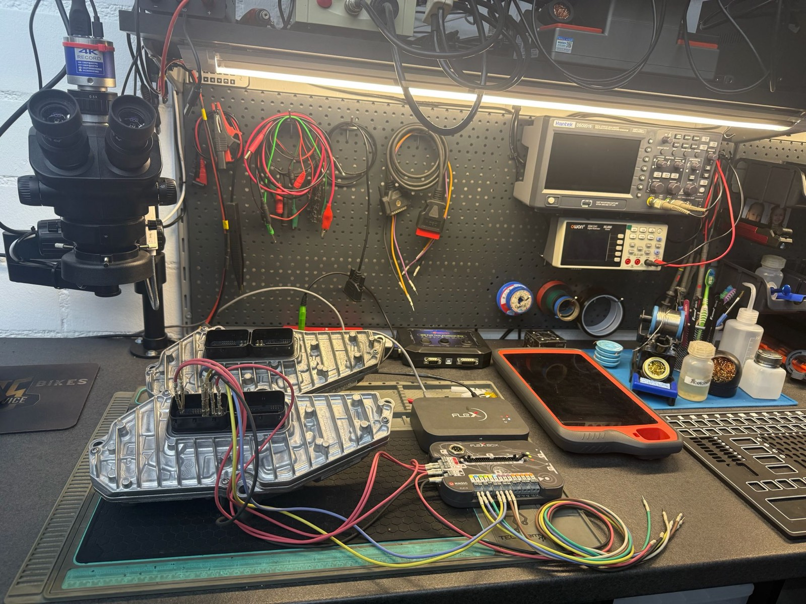
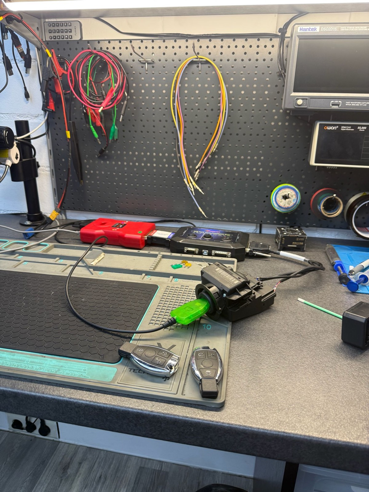
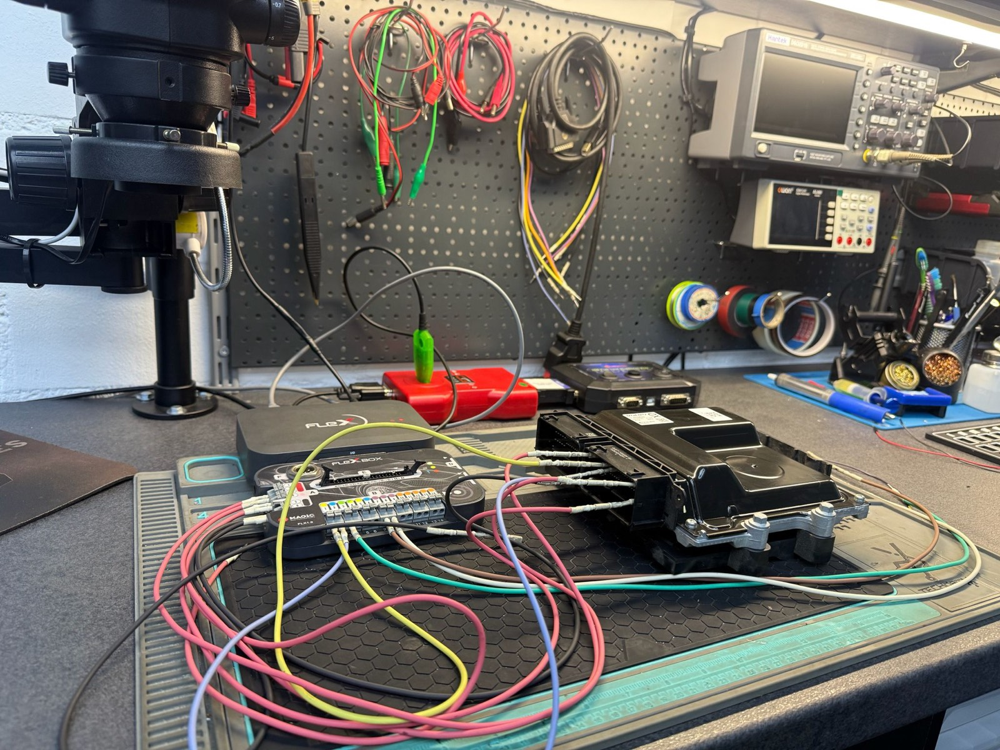
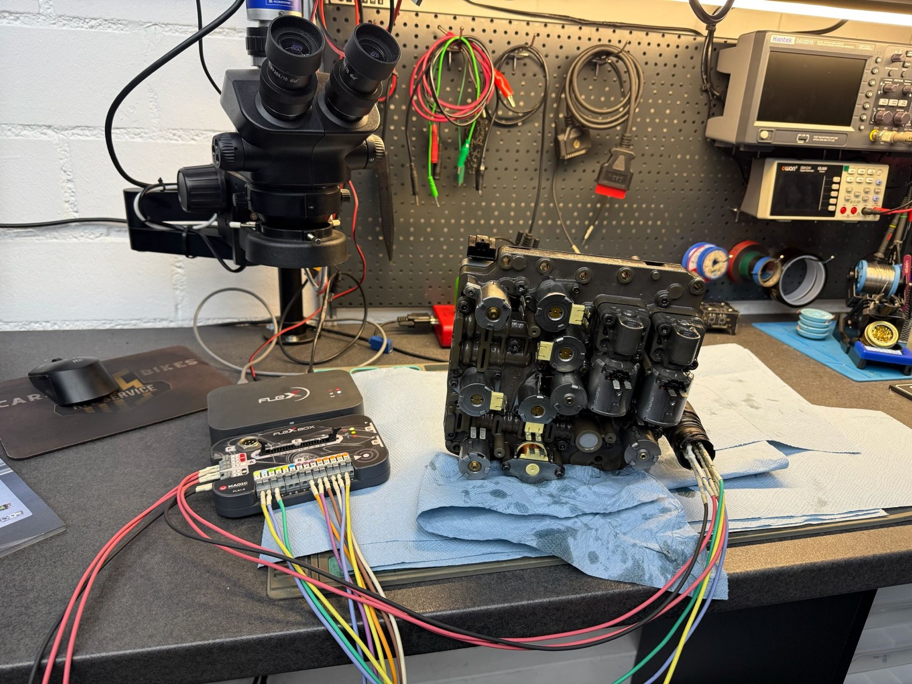
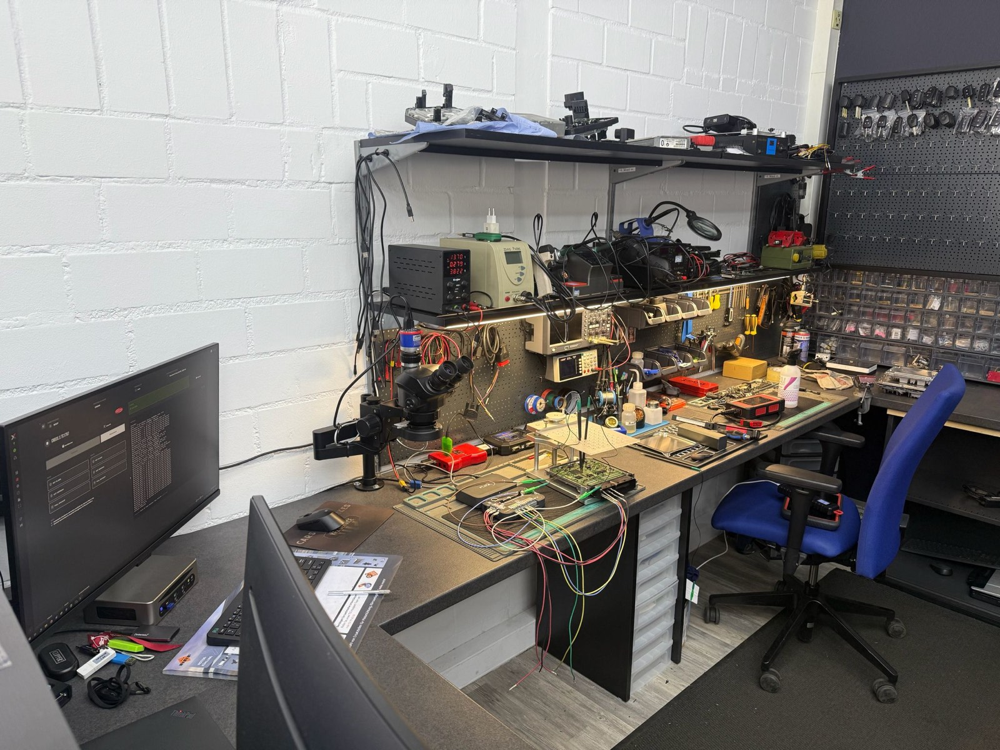
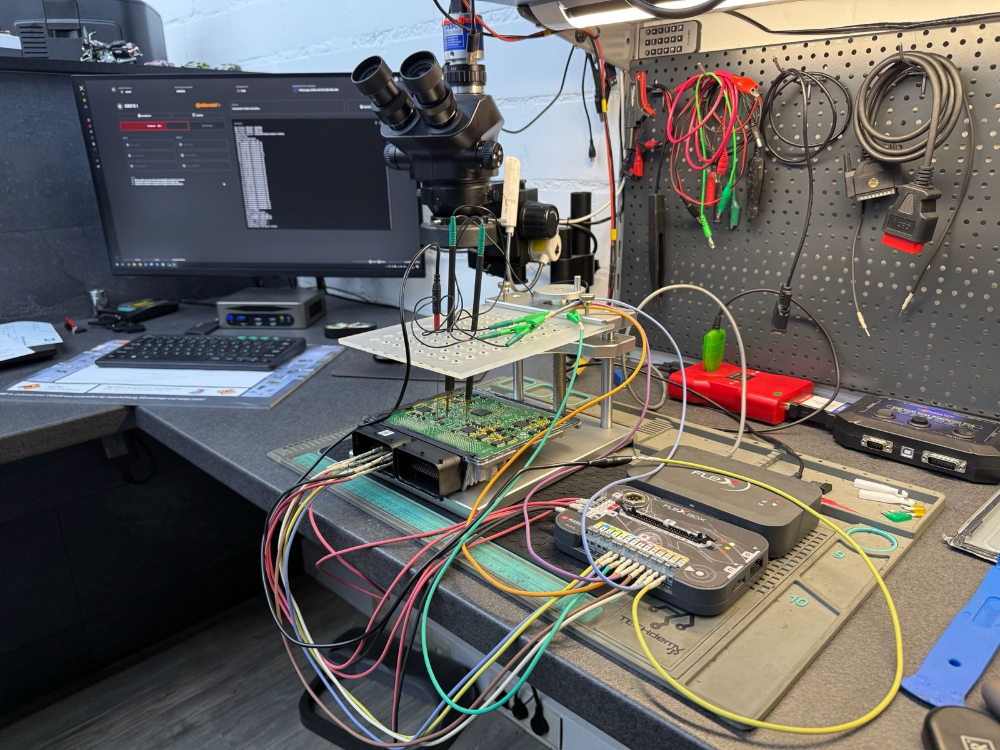
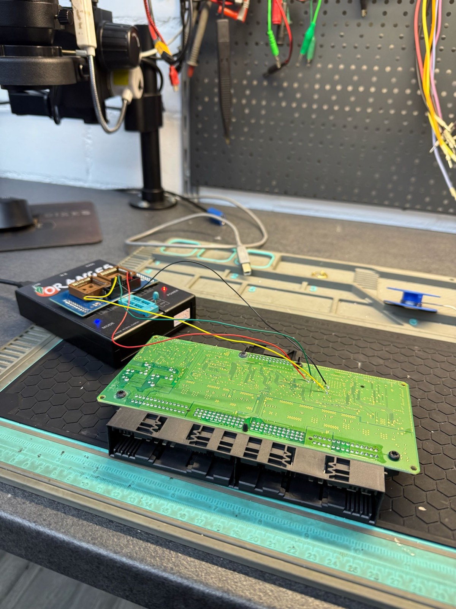
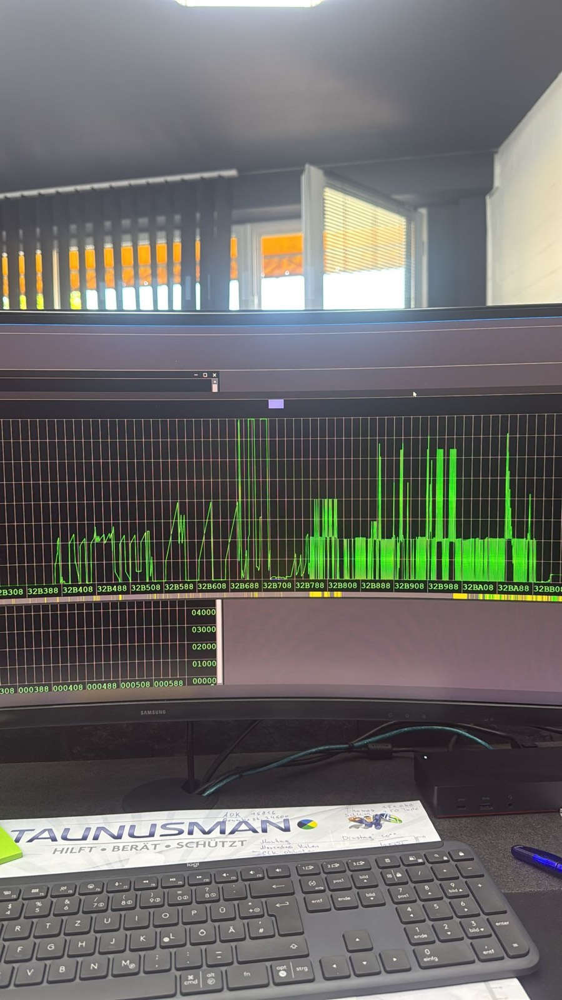
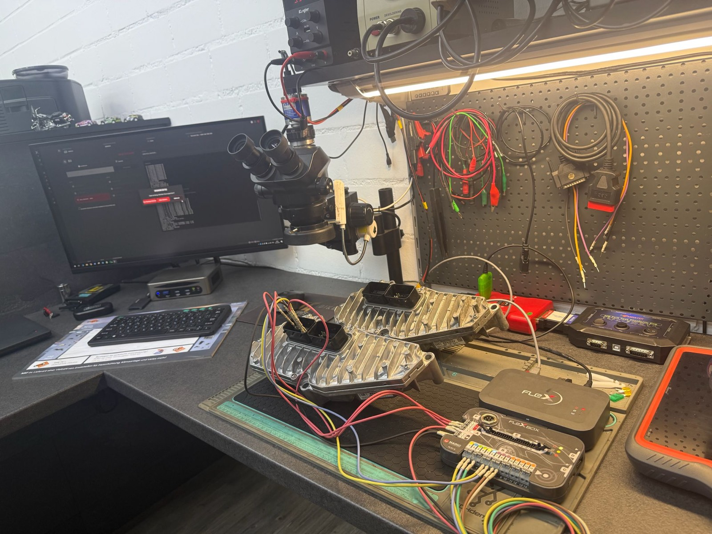

Schlüssel verloren
Kein Ersatzschlüssel mehr greifbar – im schlimmsten Fall sind alle Schlüssel weg.
Neuanfertigung & Anlernen, auch bei TotalverlustWir reparieren und programmieren Autoschlüssel, codieren Wegfahrsperren und bringen Motor- und Getriebesteuergeräte wieder zum Laufen – auch bei komplettem Schlüsselverlust. Erst Diagnose, dann eine klare Einschätzung.

Die meisten Anliegen lassen sich nach einer sauberen Diagnose fachgerecht lösen – ohne unnötigen Austausch. Erkennen Sie Ihr Problem wieder?
Kein Ersatzschlüssel mehr greifbar – im schlimmsten Fall sind alle Schlüssel weg.
Neuanfertigung & Anlernen, auch bei TotalverlustFunk reagiert nicht, Tasten ausgeleiert, Gehäuse gebrochen oder Batteriekontakt korrodiert.
Reparatur von Funk, Platine und GehäuseDer Schlüssel lässt sich schwer drehen, klemmt oder bleibt im Schloss stecken.
Schloss prüfen, instand setzen oder ersetzenMotor springt nicht an, Schlüssel wird nicht erkannt oder die Wegfahrsperre blockiert.
Diagnose und fachgerechte NeuprogrammierungEin gebrauchtes oder neues Steuergerät passt nicht ohne Anpassung zum Fahrzeug.
Anpassung & Programmierung auf das FahrzeugBeim Wechsel eines Steuergeräts sollen vorhandene Daten erhalten bleiben.
Datenübertragung zwischen SteuergerätenSpezialisiert auf Schlüsseltechnik und Fahrzeug-Elektronik. Jede Leistung beginnt mit einer Prüfung – damit Sie wissen, was sinnvoll ist, bevor etwas gemacht wird.
Wir fertigen passende Ersatz- und Zusatzschlüssel an und lernen sie modellabhängig an Fahrzeug und Wegfahrsperre an – inklusive Funktionsprüfung.
Schlüssel anfragen
Diagnose, Reparatur und Programmierung von Motorsteuergeräten – ob nach Defekt, Austausch oder Anpassung an das Fahrzeug. Sauber dokumentiert.
Steuergerät prüfen lassen
Klemmende Zündschlösser, defekte Schließzylinder und beschädigte Schlüssel – wir prüfen, setzen instand und stellen die Funktion wieder her.
Problem prüfen lassenAuch wenn kein einziger Schlüssel mehr vorhanden ist: Nach Prüfung des Eigentumsnachweises fertigen wir neue Schlüssel an und lernen sie an.
Verlust meldenWird der Schlüssel nicht erkannt oder blockiert die Wegfahrsperre, programmieren wir sie diagnosebasiert neu – damit das Fahrzeug wieder zuverlässig startet.
Wegfahrsperre anfragenGetriebesteuergeräte reagieren empfindlich auf Austausch. Wir programmieren sie passend zum Fahrzeug und übertragen bei Bedarf vorhandene Daten zwischen Steuergeräten – damit Adaptionswerte und Anpassungen erhalten bleiben.
Getriebe-Steuergerät anfragen
Transparent von der Anfrage bis zur Übergabe. Sie wissen jederzeit, woran wir sind.
Sie schildern Ihr Anliegen und senden Marke, Modell, Baujahr und – wenn möglich – die FIN.
Wir prüfen die Machbarkeit, klären den Eigentumsnachweis und geben eine klare Einschätzung.
Nach Ihrer Freigabe führen wir die Arbeit fachgerecht aus – modellabhängig und sauber.
Zum Abschluss testen wir die Funktion gemeinsam, damit alles zuverlässig läuft.

Wir arbeiten ausschließlich für rechtmäßige Halter und legen Wert auf eine ehrliche Einschätzung – auch dann, wenn ein Austausch sinnvoller ist als eine Reparatur.
Wir werden nur für rechtmäßige Fahrzeughalter oder mit eindeutigem Eigentumsnachweis tätig.
Jede Arbeit beginnt mit einer Prüfung. Sie erhalten vorab eine nachvollziehbare Einschätzung.
Schlüsseltechnik, Wegfahrsperren und Steuergeräte – mit der passenden Mess- und Programmiertechnik.
Autobesitzer, Werkstätten, Autohäuser, Händler und Flottenbetreiber – mit klaren Abläufen.
Keine Stockfotos: Diese Aufnahmen entstehen direkt an unserem Diagnose- und Programmier-Arbeitsplatz.




Das Wichtigste rund um Schlüssel, Wegfahrsperre und Steuergeräte – kurz und ehrlich.